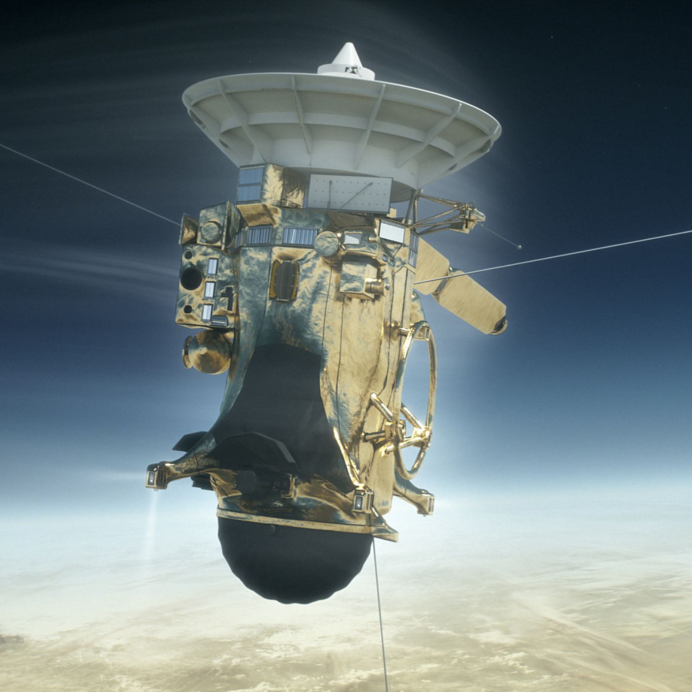

The Cassini–Huygens space-research mission, commonly called Cassini, involved a collaboration between NASA, the European Space Agency (ESA), and the Italian Space Agency (ASI) to send a space probe to study the planet Saturn and its system, including its rings and natural satellites. The Flagship-class robotic spacecraft comprised both NASA's Cassini space probe and ESA's Huygens lander, which landed on Saturn's largest moon, Titan. Cassini was the fourth space probe to visit Saturn and the first to enter its orbit. The two craft took their names from the astronomers Giovanni Cassini and Christiaan Huygens.
Launched aboard a Titan IVB/Centaur on October 15, 1997, Cassini was active in space for nearly 20 years, with 13 years spent orbiting Saturn and studying the planet and its system after entering orbit on July 1, 2004. The voyage to Saturn included flybys of Venus (April 1998 and July 1999), Earth (August 1999), the asteroid 2685 Masursky, and Jupiter (December 2000). The mission ended on September 15, 2017, when Cassini's trajectory took it into Saturn's upper atmosphere and it burned up in order to prevent any risk of contaminating Saturn's moons, which might have offered habitable environments to stowaway terrestrial microbes on the spacecraft. The mission was successful beyond expectations - NASA's Planetary Science Division Director , Jim Green, described Cassini-Huygens as a "mission of firsts" that has revolutionized human understanding of the Saturn system, including its moons and rings, and our understanding of where life might be found in the Solar System.